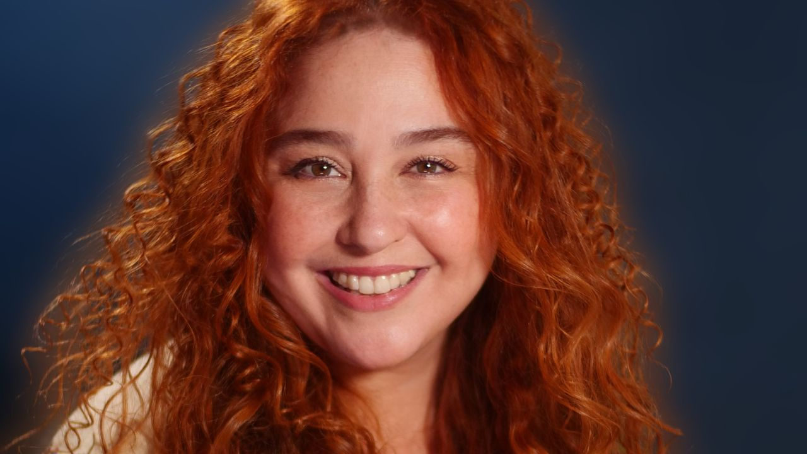

Foto — Orlando Ávila Kilesse
Teatro
Sesc Pinheiros recebe a estreia nacional de “A Pediatra”, com Debora Lamm e Luis Antonio Fortes
Inez Viana dirige e assina a primeira adaptação teatral do romance homônimo de Andréa Del Fuego. A temporada estreia no Auditório do Sesc Pinheiros em 12 de mar…
![“Ao Vivo [dentro da cabeça de alguém]”, com Renata Sorrah, faz curta temporada no Sesc Guarulhos até 15 de março](assets/acervo/f7069eac84ec61ce.jpg)